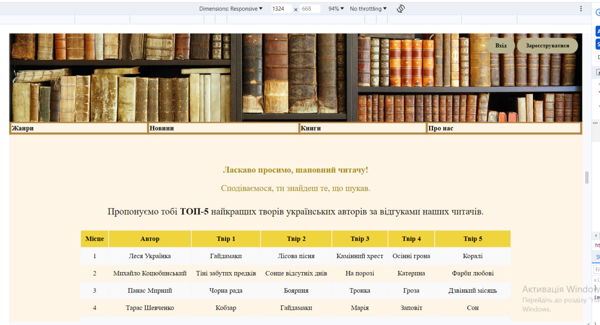
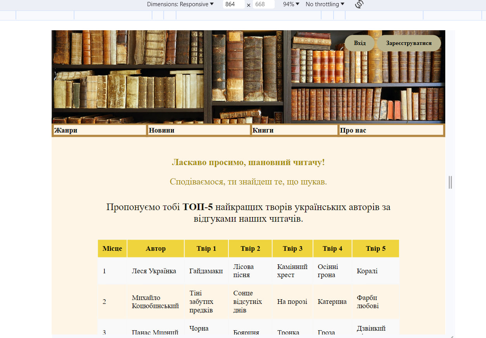
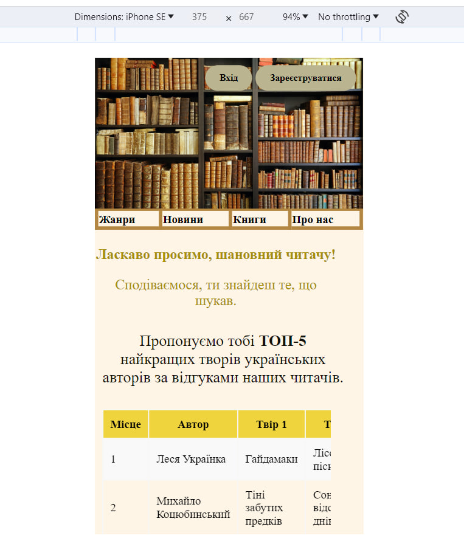

Тема/Мета
Тема: АДАПТИВНА ВЕРСТКА. МЕДІА-ЗАПИТИ. МЕТАТЕГ VIEWPORT.
СТРАТЕГІЯ MOBILE FIRST.
Мета: Адаптивна верстка. Медіа-запити. Медіа-типи. Медіа-функції.Метатег viewport. Інструменти розробника. Стратегія Mobile First.
Завдання 1
Десктопна версія :
@media only screen and (min-width: 992px) {
.button-login {
right: 155px;
}
.privit,
.name-t2,
.table-2,
.infoContainer {
margin: 20px auto;
}
.table-2 th,
.table-2 td {
padding: 10px;
text-align: center;
}
}
Вигляд:

Завдання 2
Планшетна версія:
@media only screen and (min-width: 851px) and (max-width: 991px) {
.button-login {
right: 155px;
}
.button-register {
right: 10px;
}
}
Вигляд:

Завдання 3
Мобільна версія :
@media only screen and (max-width: 850px) {
.button-login {
right: 155px;
}
.button-register {
right: 10px;
}
img{
height: auto;
}
.infoContainer {
width: 95%;
padding: 10px 0px;
}
h1, p, .name-t2{
width: 95%;
}
.si {
padding-left: 10px;
width: 90%;
overflow-x: scroll;
}
}
Вигляд:

Посилання
Висновки
Завдяки лабораторній роботі №4 я придбала практичні навички роботи з адаптивною версткою, медіа-запитами, медіа-типами, медіа-функціями, метатег
viewport, інструментами розробника, стратегією Mobile First.